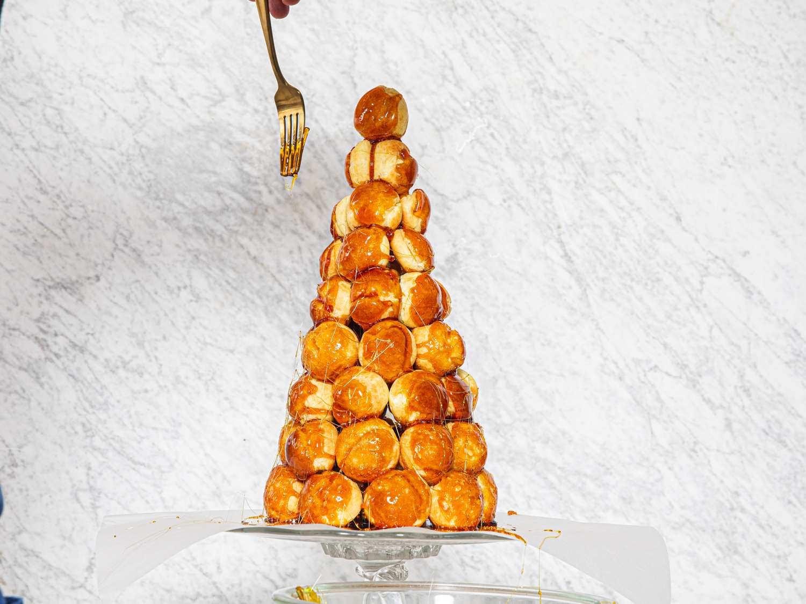
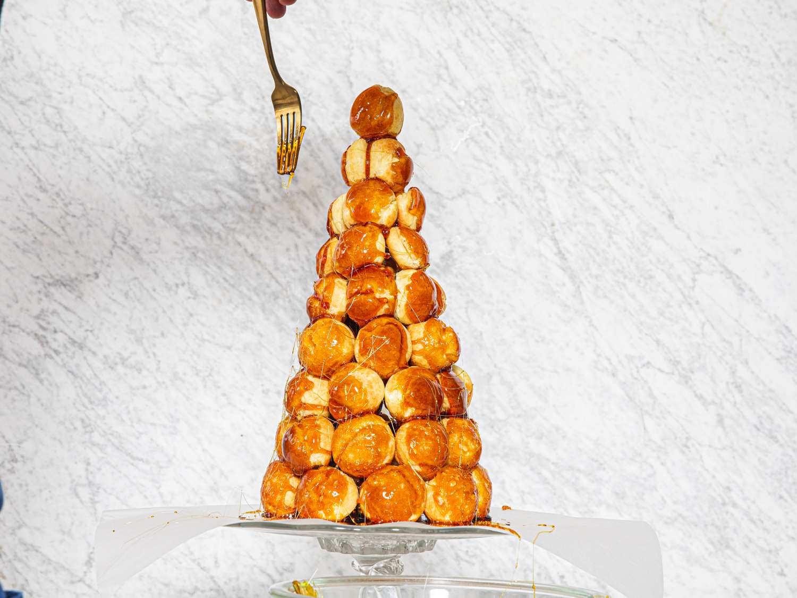

In a pot, heat the milk and vanilla bean pod and seeds over medium heat, bringing it to a boil. Once it begins to boil, turn off the heat and let steep for 15 minutes.
Using a hand mixer, beat the egg yolks and sugar until light and fluffy, about 2 minutes.
Add the cornstarch and mix until fully incorporated.
Remove the vanilla bean pod from the milk. Add ½ cup (120 ml) of the milk to the egg yolk mixture and mix until well combined. Add the remaining milk mixture and beat until fully incorporated.
Over medium heat, whisk the mixture constantly until thickened, about 7-10 minutes.
Remove from the heat and add the butter, whisking to combine.
Strain the custard into a bowl to ensure a creamy custard (optional). Cover the custard with plastic wrap, making sure that the plastic touches the custard, and chill for at least 2 hour.
Preheat oven to 425˚F (220˚C).
In a large pot, bring the water, butter, salt, and sugar to a boil over high heat.
Once the water begins to boil, remove the pot from the heat and immediately add the flour, stirring constantly with a wooden spoon until the liquid is absorbed and the mixture begins to form a ball.
Return the pot to the heat and cook for another 30 seconds to remove excess moisture. Remove the pot from the heat.
Working quickly, add the eggs, one at a time, stirring until fully incorporated. Continue stirring until the dough starts to pull away from the sides of the pan and is thick and glossy. Alternatively, you can use a stand mixer with the paddle attachment.
Using a piping bag with a standard round tip, fill the bag with the batter.
Place 1-inch (2 cm) dollops on a parchment paper-lined baking sheet, spaced at least 1-inch (2 cm) apart.
Use a wet fingertip to gently press down any points on the puffs. Brush the egg wash over the the puffs.
Bake for 15 minutes. Reduce heat to 375˚F (190˚C), and bake for 15 minutes.
Let puffs cool completely.
Use the bottom of a wooden skewer to create an opening in the bottom of the cream puff shells, just big enough for a piping tip to insert.
Fill a piping bag fitting with a small round tip with the custard. Gently fill the puff shells with the custard.
Add the sugar, corn syrup, and water to a pan over medium heat. Bring to a boil and put the lid on, cooking for 5 minutes without moving. Remove the lid and cook for an additional 7-10 minutes, until the caramel is a deep amber color and reaches 300˚F (150˚C).
Remove the pan from the heat and add the heavy cream, stirring vigorously.
Working quickly, dip the cream puffs into the caramel and arrange on a serving platter in a circular pattern.
Continue to stack caramel-dipped cream puffs in a tower shape.
Once your tower is completed, dip a fork into the caramel sauce and drizzle it around the tower.

 
